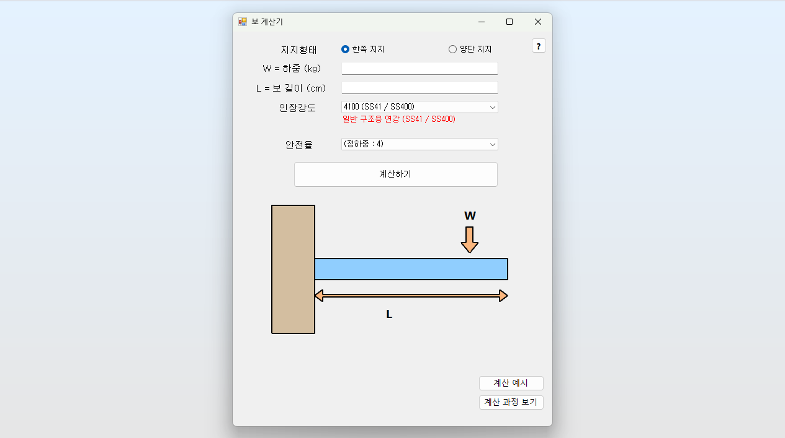
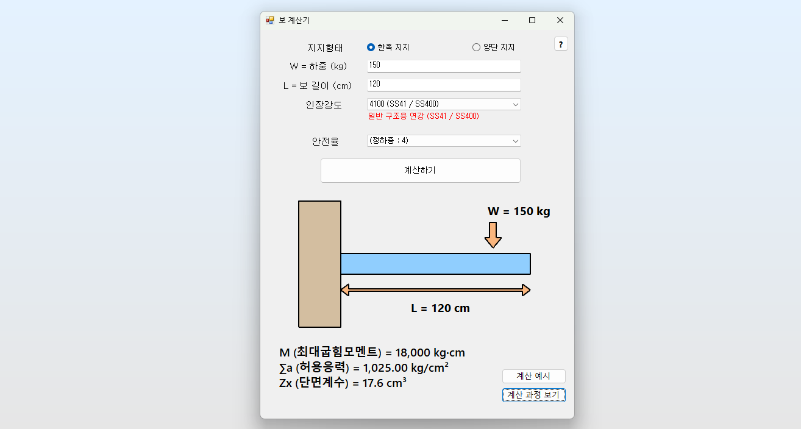
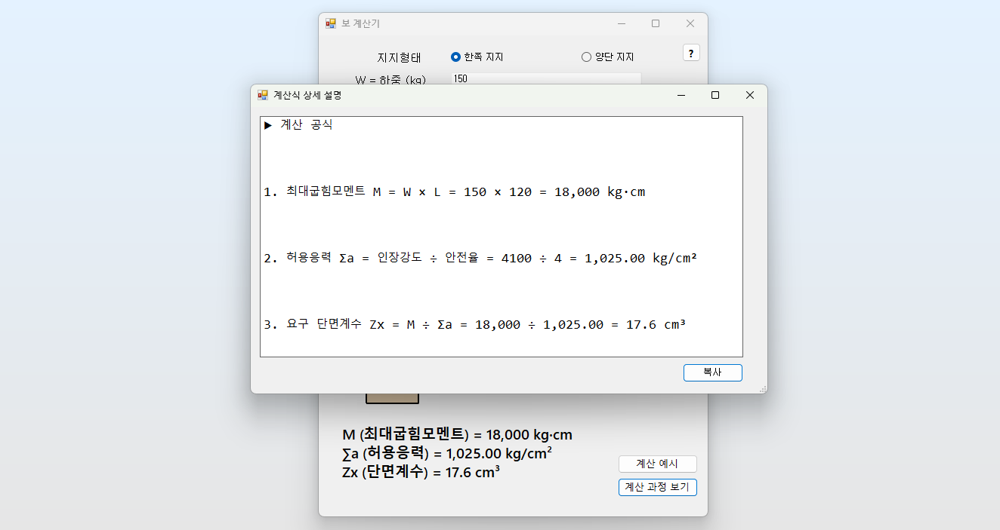

BeamCalculator
BeamCalculator :
하중과 보의 길이를 입력하면 요구되는 단면계수를 계산해주는 도구입니다.
Steps
BeamCalculator 명령 실행
하중(W)과 보 길이(L), 인장강도 및 안전율을 입력합니다.
‘계산하기’ 버튼을 눌러 단면계수(Z)를 계산합니다.
결과를 확인하고 ‘계산 과정 보기’ 버튼으로 상세한 해석을 확인합니다.
  
Note
우측 상단 [?] 버튼을 클릭하여 계산 공식과 기호 정의를 확인할 수 있습니다.
“계산 예시” 버튼은 클릭하여 기존 사례를 참고해 계산 절차를 확인할 수 있습니다.